id="js_content" style="">他一出生就被抛弃。
后来被一个电视制作公司收养，却被丢在巨形摄影棚中成为直播节目的主角。
从出生到结婚，生活中的每一秒钟都有上千部摄像机在对着他。
所有的一切都暴露在全球17亿看客的眼中。
大家消费着他的眼泪，消费着他的笑声，消费着他的每一个动作和每一句话语。
父母、妻子、朋友、同事都是假的，只有他一个人在认真活着。
直到30岁，他才发现身边的一切都是谎言......
《楚门的世界》上映已经20年，直到今天，这部电影仍旧让人细思极恐！
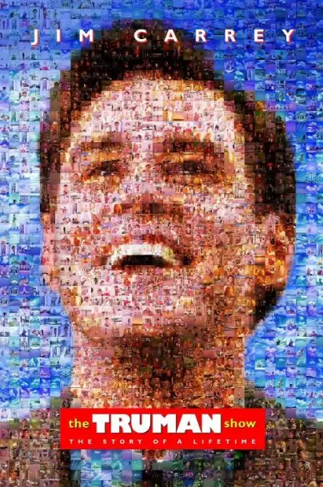
-01-
要彻底地欺骗一个人。
那就必须要从娃娃抓起。
要让他出生在一个纯净到不掺杂一丝真相的谎言世界中。
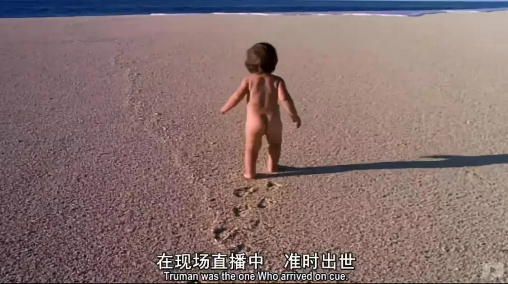
所以，在小楚门出现之前。
制作组早已经准备好了巨型摄影棚。
这里的太阳、月亮都是假的，这里的人都是训练有素，有着高超职业精神的演员。
对于一个小孩，几乎不可能去质疑身边的一切。
所以，娃娃永远都是意@识形态的重中之重。
思想品德不过关，你永远都是难以升级的小屁孩。
可是娃娃会长大，娃娃会有好奇心。
而谎言虽然厉害，也是有边界的。
一旦被突破，谎言便再无立锥之地。
所以，制作组建起了“墙”，用一片汪洋大海阻断了楚门通向自由的道路。
为了让楚门彻底死心。
节目组精心策划了一场事故。
特意安排楚门小时候与父亲出海时，让父亲因为暴风雨在大海失踪。
这使楚门自此留下阴影并害怕出海。
恐惧可以让一个人自我审查，将自己的好奇心控制在合理的范围之内。
可是，维持谎言也是需要成本的，总不能24小时，让演员不间断演出。
所以，楚门必须随时被监@控。
如果他去医院，那就提前让医院的演员赶紧做起手术来。
如果发现楚门企图坐巴士离开小镇，那就让车子恰好出现故障。
就这样，谎言维持了30年。
换作是你，你是否有自信比楚门更早离开？
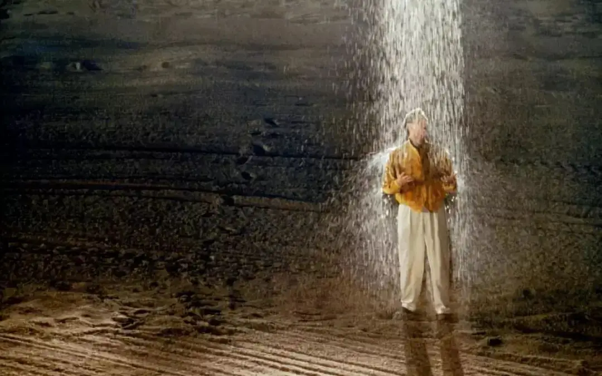
-02-
谎言终究还是被突破了。
虽然直接原因是节目组的bug：竟然让饰演爸爸的演员“起死复生”客串了一个流浪汉，还被楚门给碰到了。
更重要的原因有两个：
谎言里没有爱
如果一个人爱你，他就不会骗你。
楚门是一个有血有肉、真真实实的人，他能够很敏感地觉察到身边人对他的态度。
他在和妻子的结婚照中发现，妻子竟做着求神原谅说谎的交叉手指动作。
难道和自己结婚是一件多么“为难”的事么！
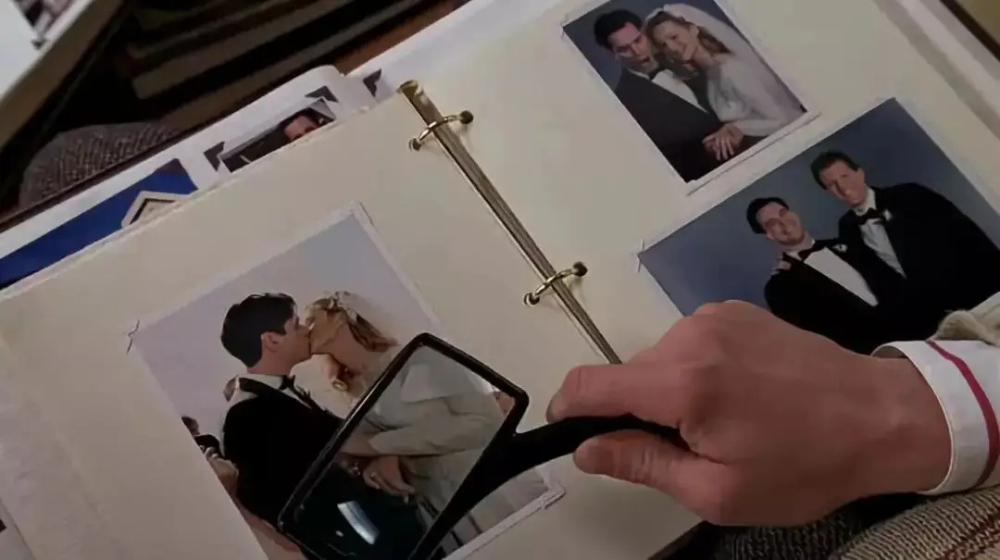
后来楚门在逃走失败后与妻子吵架，而妻子竟然还对着空气推销可可粉。
她一本正经地念广告的时候，那个笑容真的很吓人，以至于楚门不得不重新审视身边的一切。
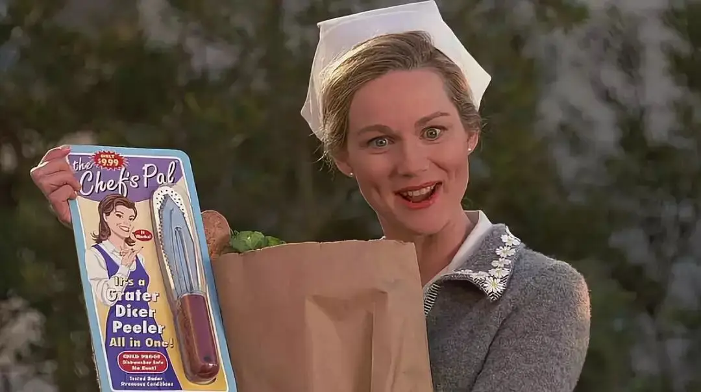
自由的种子
有些东西，虽然看上去很不起眼，甚至很薄弱，但是你永远都难以估量它的作用。
楚门的初恋女友假戏真做，她同情甚至爱上了楚门。
当和楚门分别的时候，她告诉楚门自己的真名是「席维亚」 ，并说所有人和东西都只是在做戏。
不明所以的楚门目睹了席维亚的父亲把她带走，并得知他们将举家搬到「斐济」。
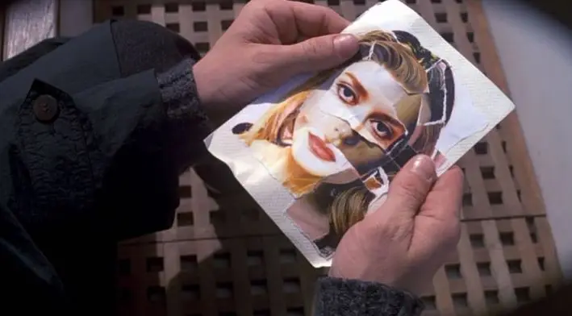
从此，「斐济」成为自由之地的象征。
「到斐济见席维亚 」的梦想也藏在了楚门的心底。
多年以后，当楚门发现身边的谎言后，这颗自由的种子也随之快速生根发芽。
无自由，毋宁死！
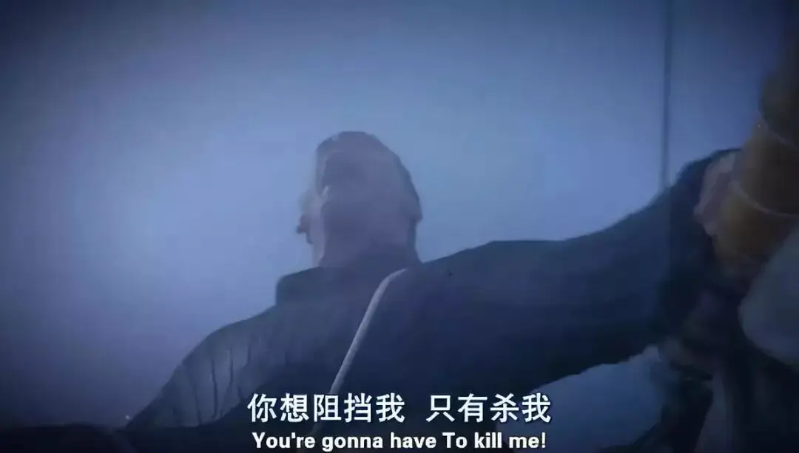
-03-
楚门的世界中，我们能够看到谎言和监@控。
楚门的世界之外，则是世俗化和娱乐至死。
真正束缚我们的不仅是那种“老大哥”式的专制，还有空虚和娱乐。
尼尔 · 波兹曼《娱乐至死》中提到：
我们沉迷在我们热爱的东西---各种娱乐及信息之中，丧失了思考的能力，并且对此，我们毫无所觉，我们心甘情愿。
这是一种可怕的病态。
人类文明发展至此，竟然在这种罪中之乐中乐此不疲，甚至有人为此鼓掌、买单。
17亿看客的需要造就了楚门世界的悲剧。

他们空虚无聊，以消费者的名义到处“吃人”，并剥夺了楚门的自由。
他们从被玩弄于手掌之中的楚门身上得到娱乐和享受。
直播节目甚至要将楚门的性爱过程公布在全世界人的眼中。
而当楚门走出大门，制作组停播节目的时候，两个保安说“来看看有什么别的节目”。
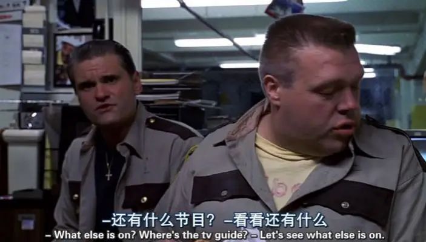
你走了，那就消费另一个人。
没有人对这个“笼中之鸟”有任何怜悯和同情。
只有席维亚隔着屏幕为他流泪。
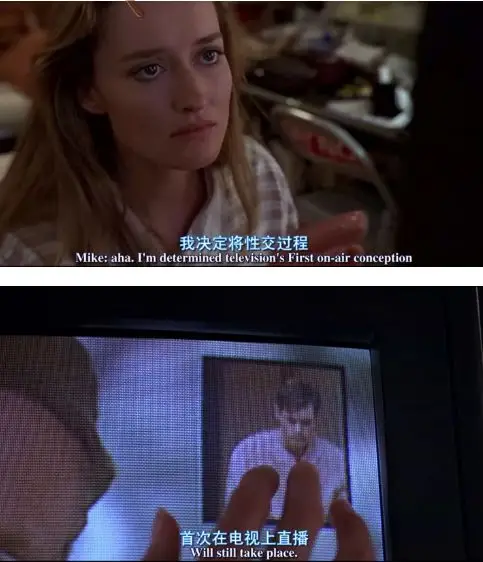
可是，某种程度上这些消费者也是另一个“楚门”。
他们的沉浸在感官享乐中无法自拔，他们孤身一人宅在房间里，享受着窥探别人生活的乐趣。
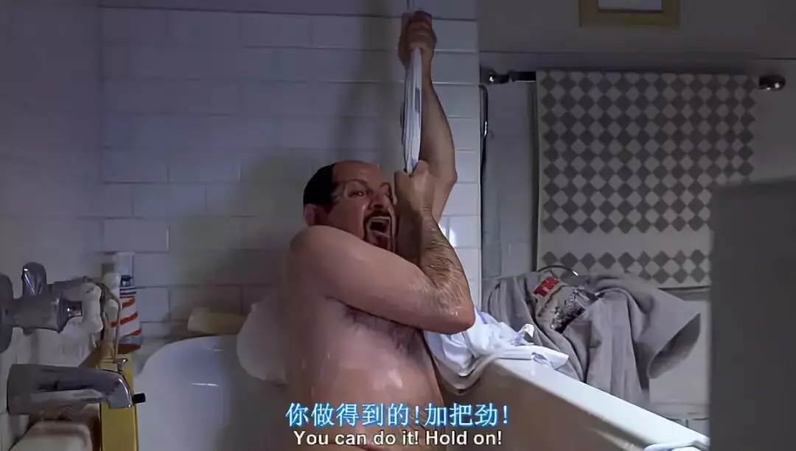
甚至，他们有人更愿意活在楚门的世界中。
楚门的挚友马龙，7岁开始就一直陪楚门演戏，而且他知道真相，却几十年如一日沉醉其中。
楚门的妻子则更荒唐，她只是电视节目中的妻子，却真真实实和楚门发生了关系。
演出真人秀就是他们全部的生活，这真的很可悲！
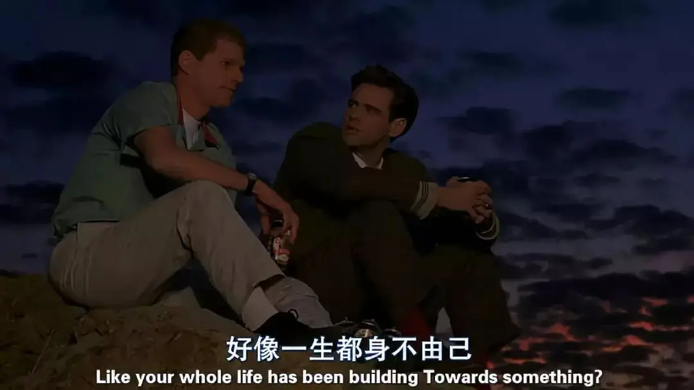
就像通往自由的门只是一扇窄小的黑门一样。
楚门的世界中充满了谎言，外面也一样布满了看不见的陷阱。
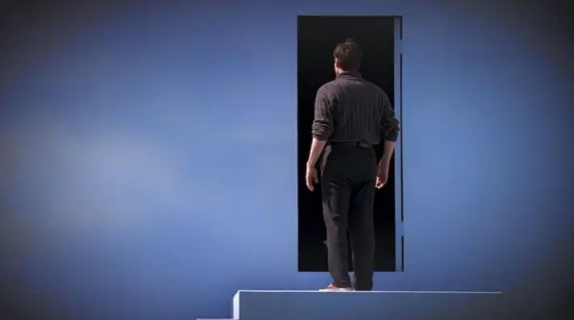
因此，节目导演克里斯托弗这样劝阻楚门：
听我的忠告，外面的世界跟我给你的世界一样的虚假，有一样的谎言，一样的欺诈。但在我的世界你什么也不用怕，我比你更清楚你自己。
克里斯托弗说的没错，外面也许一样很黑暗，但至少还有席维亚，至少还有选择的自由。
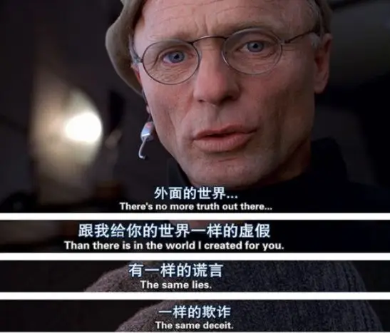
-04-
这部作品的深意不止于描述一个可怕的现实。
还深入到信仰层面，似乎要颠覆传统的上帝视角。
楚门的名字叫 True man，导演的名字叫Christof，和耶稣基督只有一个空格的距离。
而他和楚门之间的关系恰如其名字所示，Christ of / True man——凡人之神。
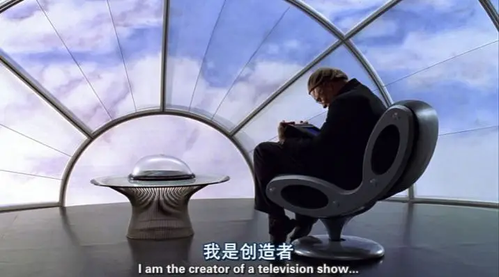
这个“神”对自己的造物“没有”怜悯。
虽然电影有三次，克里斯托弗隔着屏幕抚摸着楚门。
但这不是爱怜，更像是那种沉醉于自己杰作中的复杂自恋。
作为造物的楚门只是他的作品，只是他赚得声望和金钱的工具。
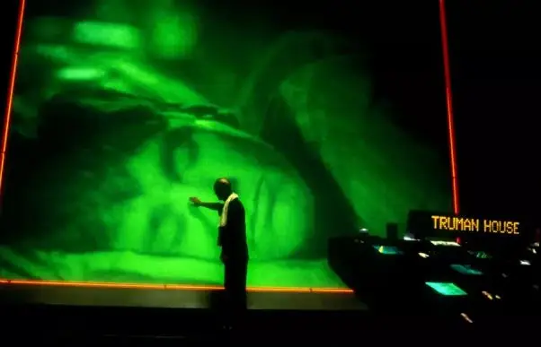
当楚门出逃的时候，克里斯托弗起初像一个充满慈爱的父亲一样开导他：
你害怕，所以你不能走，楚门不要紧，我明白。我看了你的一生，你出生时我在看你；
你学走路时，我在看你；你入学，我在看你；还有你掉第一颗牙齿那一幕。你不能离开，楚门你属于这里，跟我一起吧。
当看到楚门没有任何反应的时候，克里斯托弗才露出了他的真面目：回答我，说句话。……说话！你上了电视，正在向全世界转播。
克里斯托弗在乎的是收视率，在乎的是自己毕生心血的事业！
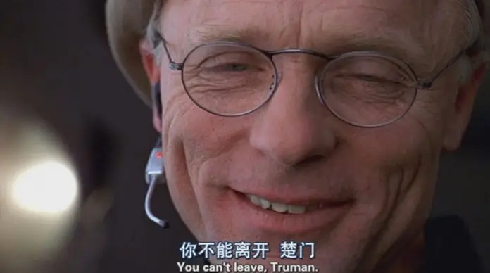
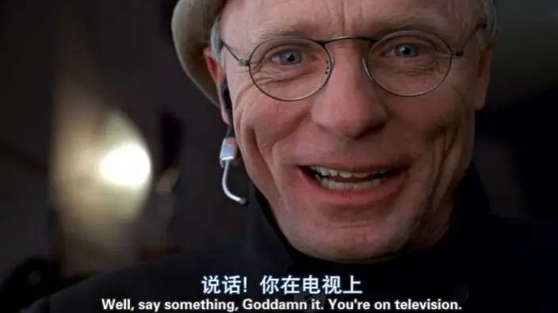
上帝创造了人类，但只是将人类当做玩偶一样愚弄。
人类不愿意被愚弄，甘心吃下善恶树的果子出走伊甸园，从此，自己主宰自己的命运。
这是导演深藏在电影之后的观念。
可是，克里斯托弗不是上帝，他和楚门一样都只是人。
两个创造并不是可以简单类比的。
而且在《圣经》中，耶稣没有高高在上冷漠地看着人类的苦难，而是道成肉身进入了人世中，并为无数个“楚门”被鞭打、被定死在十字架上。
这才是真正的奇迹，真正的创造，也是人类摆脱极@权、娱乐至死并得享自由的唯一盼望。
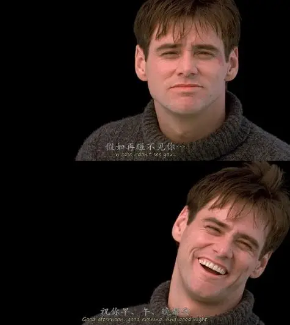
关注并回复：楚门的世界
获取电影资源
这里没有挑逗你眼目情欲的小鲜肉
也没有挑动你肉体情欲的段子
更没有膨胀你今生骄傲的鸡血
我们只在乎那些最质朴真诚的作品
在那里我们才能恢复真正的想象力
我们也坚信这才是我们真正需要的

ID:Six_hundred_hits
长按二维码，一键关注
【六百击】
-END-
电影评论
尽情分享朋友圈

苹果打赏通道
小提示：文末广告是腾讯配送广告，内容与本号无关，但您的每次点击（无需反复点）都会给平台带来几毛收益，欢迎您点击支持六百击。